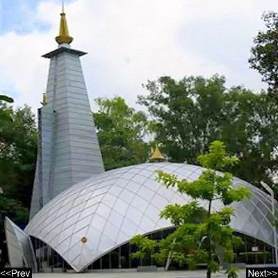

|  |
|
Eme temple The EME Temple or "Dakshinamurty Temple" is a Shiva Temple run by Indian Army Authorities in the city of Vadodara in the state of Gujarat, western India. It is a unique in concept & design, geodesic structure covered with aluminium sheets. Address: EME Rd, Vadodara, Gujarat |